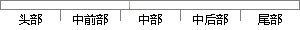

普通任务即为开发者创建的任务。
片段位置图

相似结果
相似片段：起新任务域的语言模型,从而实现口语识别的任务域移植...3)最大限度的降低对普通开发者的专业要求,减轻开发...eXML的结构模型开发者在创建VoiceXML应用时,可以不...
| 标题 | 《可移植汉语口语对话系统的研究》 |
| 对比库 | 中国学位论文全文数据库 |
| 作者 | 何伟 |
| 机构 | 北京交通大学 |
| 分类 | 信号与信息处理 |
| 年份 | 2004 |
| 相似率 | 84.62% （严重抄袭） |
※ 片段修改建议 ※
近似词参考：- 创建：建立 创立
- 任务：使命 义务
- 普通：通俗 平凡
系统自动生成语句：通俗使命即为开发者建立的使命。
注：本片段修改建议为系统自动生成，仅供参考。